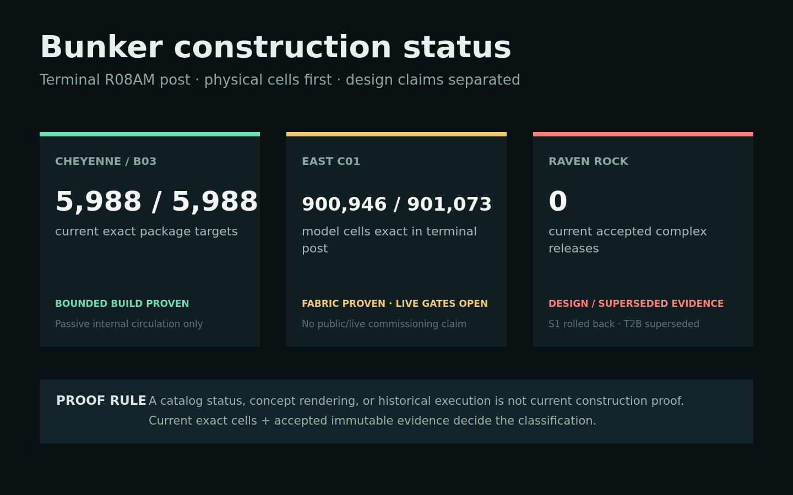
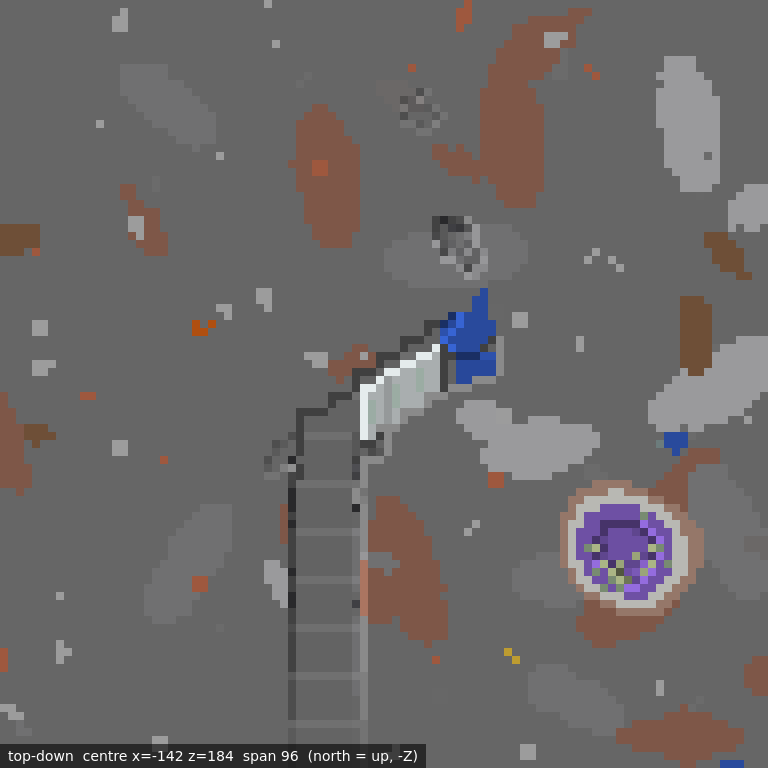
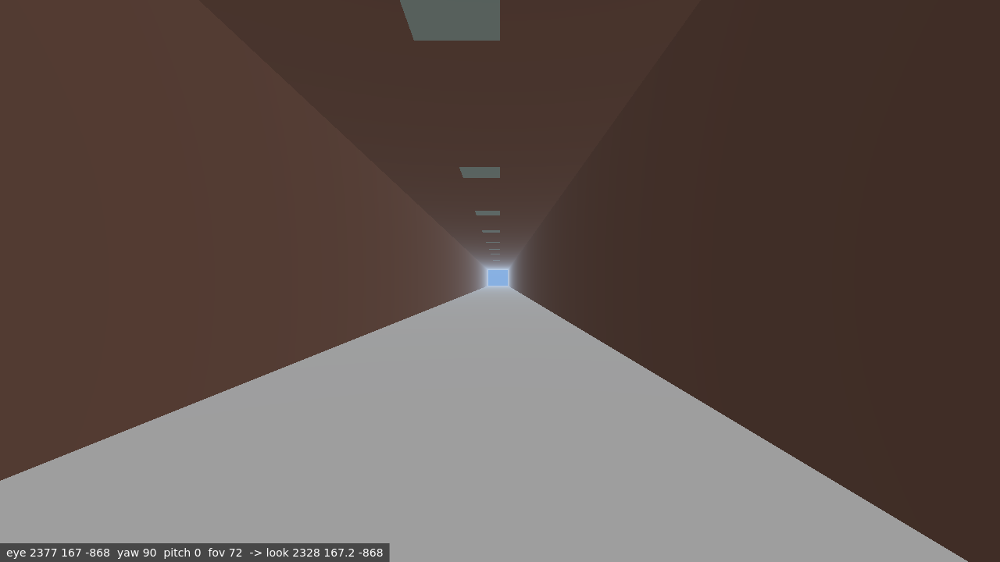
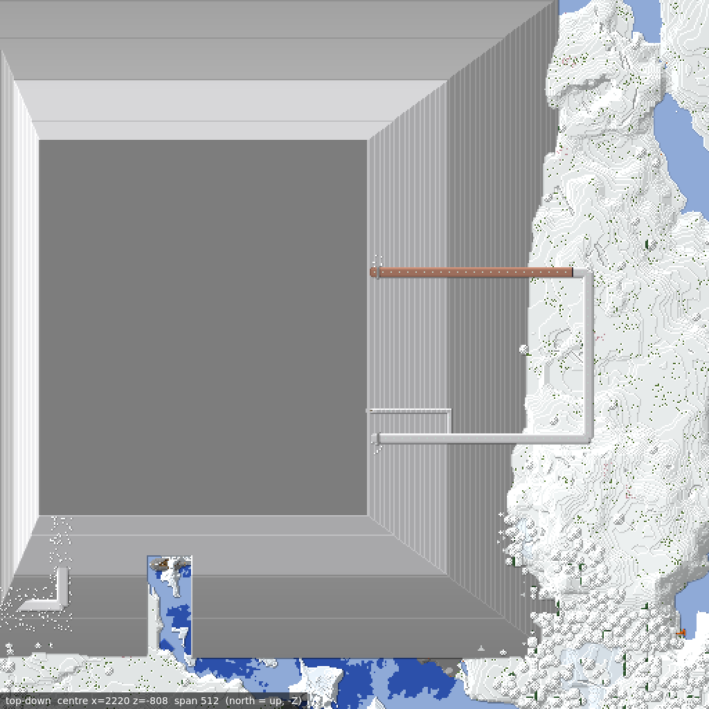
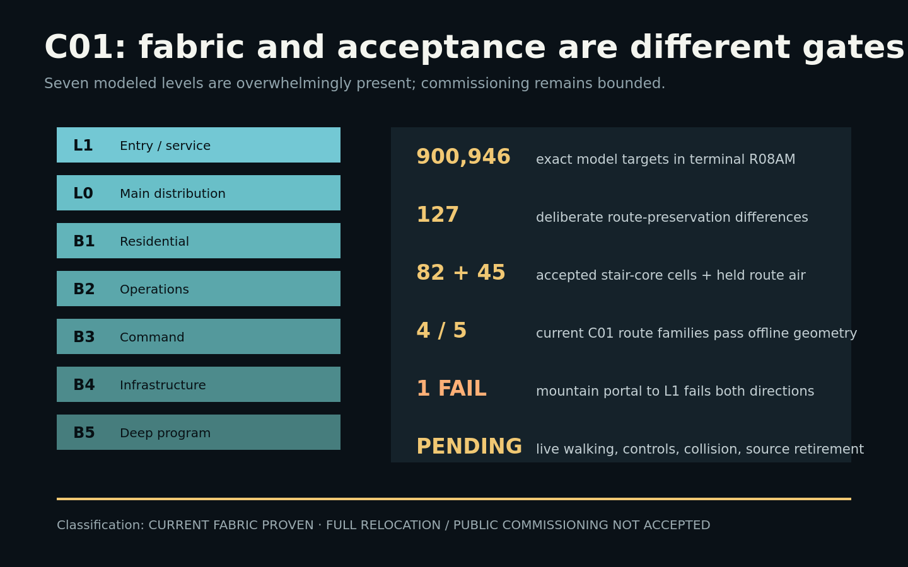
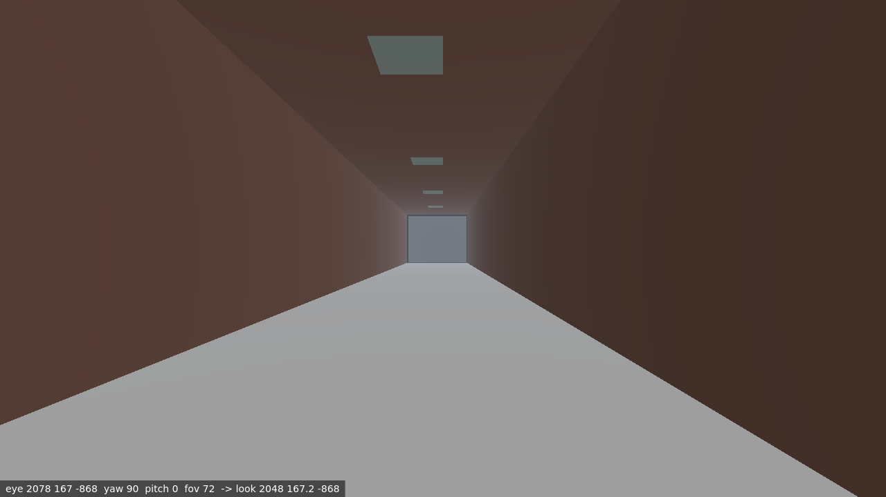
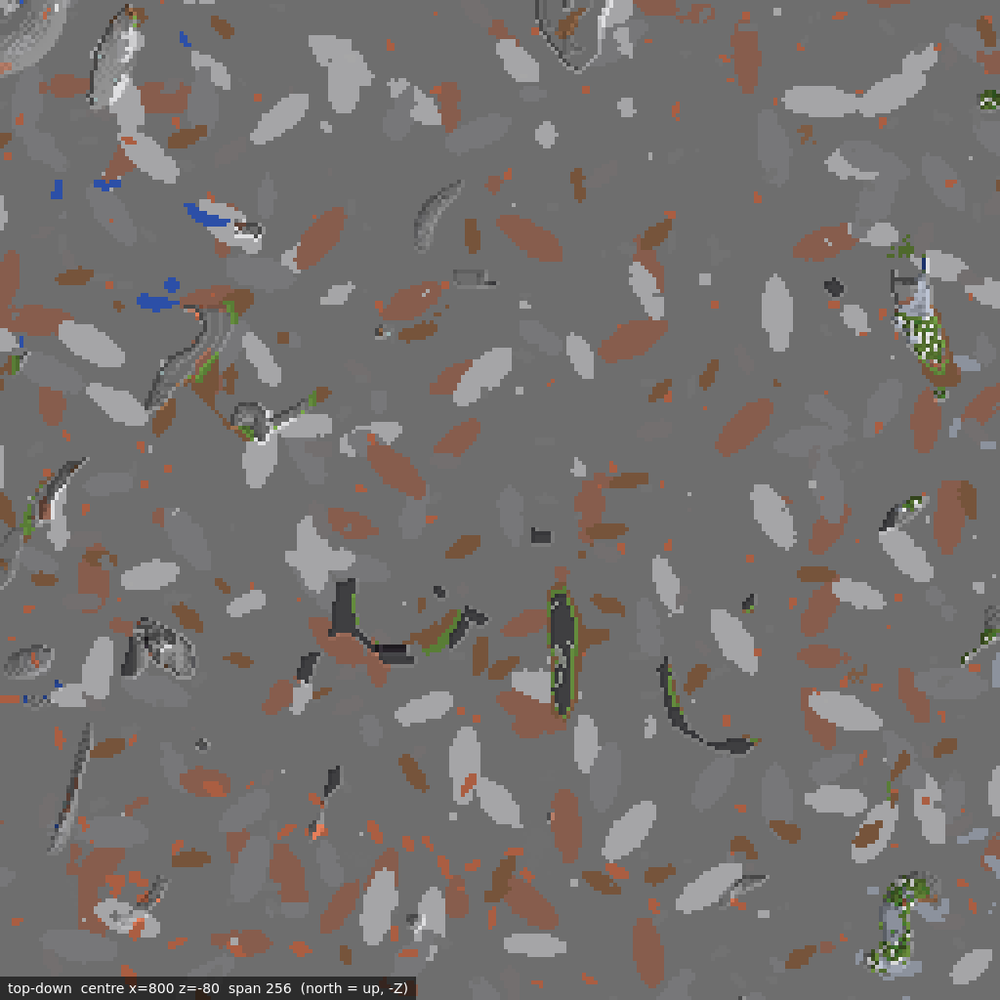
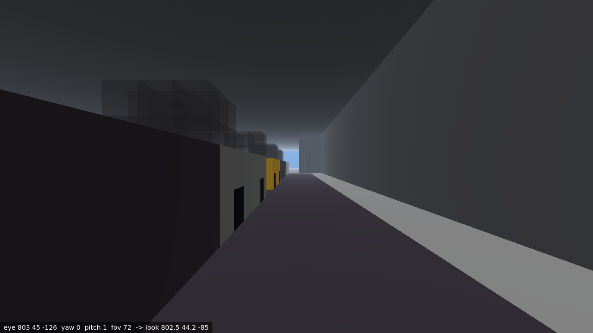
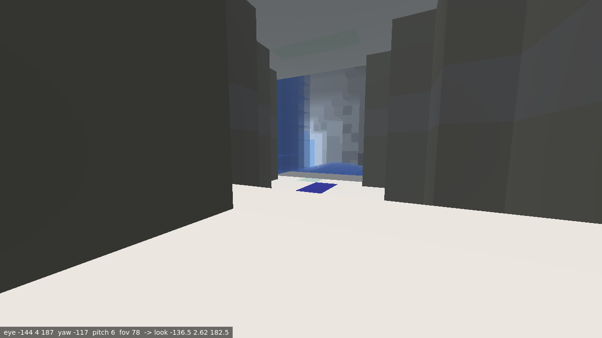

Exact current fit-out targets; R12O commissions passive internal inspection/circulation only.
Report 06 · terminal evidence review · 2026-08-22
Bunkers: what is actually built.
An immutable-snapshot audit of Cheyenne, Raven Rock, and both C01 programs. Current blocks lead; catalogs and design documents do not get to impersonate construction evidence.
5,988 / 5,988Cheyenne current targets
900,946east C01 model targets exact
0current Raven Rock accepted complex releases

Evidence-backed classification
All 127 differences are accepted route-preservation states. Full relocation and public operation are not accepted.
S1 was rolled back. T2B was historically accepted, then 150 of 151 cells were superseded.
Cheyenne / B03
A long, illuminated, enclosed route exists now. Its chamber terminus remains capped. This report does not commission secure access, public access, active systems, the chamber, or the held indices 0…187.



C01: enormous fabric, bounded acceptance
The east C01 model is physically present to 99.986% exactness, with the complete remainder explained by accepted route preservation. 4/5 C01 route families pass current offline geometry; TE-ROUTE-C01-MOUNTAIN-PORTAL-L1 fails both directions and is not an available connection. Live walking, powered controls, entity observation, source retirement, parking recovery, and public commissioning remain explicit nonclaims.



Legacy MainStreet C01 is separately real: 25,193 of 30,361 unique historical operation targets remain exact in the terminal post. Later fabric means the old packages cannot be presented as a complete current as-built seal.
Raven Rock: design is not a bunker
No current accepted Raven Rock complex release survives. The image below is the current observed former T2B volume—not proof of the planned complex and not a claim of accepted Raven Rock provenance.


Audit boundary
Current exact block states in the terminal immutable snapshot are physical evidence. Accepted release and post-QA ledgers establish provenance and bounded acceptance.
Historical execution followed by rollback, or target states superseded by later work, is reported as history rather than current accepted construction.
Database status, authored coordinates, planning schedules, concept renderings, and masterplan prose are not independently sufficient proof that a structure exists now.
Offline route geometry is not a claim of public access, live walkability, powered-control readiness, secure commissioning, or operational occupancy.
- data/world-review/combined-zones-r08am-live-20260822T161818Z/evidence-ledger.json
74cffa90107e462a0d3b1742b9814b3f83d882fc0279290ee5296e5c13f45190 - data/world-review/combined-zones-r08am-live-20260822T161818Z/post-snapshot-identity.json
e93e3f60c387ca40a8257fab374f22de6fdea795d2472b15fd4f373a210ec4cc - data/world-review/combined-zones-r08am-live-20260822T161818Z/post-complete-save-intake.json
ec5b5c3bc53cee1a6494db6628a9988ca86e28063ee5f3cef91c101270c5467b - data/world-review/combined-zones-r10a-live-20260821T163935Z/evidence-ledger.json
84ddf28bc2127850eaf77546715feac3a3644d40571bc6b170f817b821091058 - data/world-review/combined-zones-r10a-live-20260821T163935Z/r10a-post-release-qa.json
ab865fa7729e315f4e58804cbaf98f999e84e7bb3f13aa7b494025091543a0b2 - data/world-review/combined-zones-r10g-live-20260822T031853Z/evidence-ledger.json
5710be3be4e9d9706e35373ab56e892aaae00a546033e986fe56d4ed4ba38f57 - data/world-review/combined-zones-r10g-live-20260822T031853Z/r10g-post-release-qa.json
934a0759dbc336ac124356bc04de8bfe3b83cf83632c732512c163452130d79d - data/world-review/combined-zones-r10h-live-20260822T035805Z/evidence-ledger.json
4b941b36e71de03cb40d73edc7a526de24ee786550eb02d4b8a8b866b0eec8bc - data/world-review/combined-zones-r10h-live-20260822T035805Z/r10h-post-release-qa.json
0219243e1e1a649ee7dd5b3f0f57efc3beb1778a28d22a805e8d8020c1b9b11c - data/world-review/combined-zones-r12o-b03-complete-enclosed-route-commissioning-20260822T041000Z/r12o-commissioning.json
e4ee22264c73fbac7e1f3c6640a78fe452f693d5a9daf05bb2f929c90210b1d4 - docs/masterplans/01-cheyenne-mountain-complex/build-info.json
ba9d57ba74931d26f857ce61dbf8b2361a548095e7ed1d58147b51ff7508c3d6 - data/world-review/redevelopment-wave2-post-release-qa-2026-07-28.json
551be053a21e37edc246f95cb2ded30df138f600f66c5574c2cf9b9b7f321d4c - data/buildops/ravenrock-t2b-liner-pilot-wave2-prerelease-2026-07-28.txt
2ad97a32c2a48b28021edd2dd782acd78e0f07ed42b7d3949a0685bc06fd9690 - data/buildops/ravenrock-s1-section-pilot-2026-07-27.execution.json
65b3a41e7a146db89650dc1e6567063858f577cd173babaa1c043742d7c2ec96 - data/buildops/ravenrock-s1-section-pilot-2026-07-27.emergency-rollback.execution.json
64558dbfc98e8e0ba0a99caae658fec2b79606cbbfc567869ea7da82221a41cb - docs/raven-rock/qa/qa-report.md
667eff6975ab1e87435ea1426648e22d6720d248be6e6c66b9485bec5f41452b - docs/masterplans/08-raven-rock/MASTERPLAN.md
694f1c41651f21c2fccdea01a2c3de9e8353460e24e28682eab2e97ccc577b13 - docs/redevelopment/2026-07-28-town-expansion/c01-bunker-classification-manifest.json
26b811e96b86f2c3766e0f4f7b5e24604215b0520d43f57be1272bf217d4b1e5 - data/world-review/town-expansion-r1-post-release-qa-2026-07-28.json
7200a6d23e838d80f1c21fb5585a72434103056c71793073d68918885f083672 - data/world-review/c01-route-preserved-core-post-route-qa-bound-2026-08-08.json
93bf428005ebb3777c5442cc0e6e06b85f02765964d52d406e066c642b2f26f4 - data/world-review/underground-navigation-r08am-20260822/current-route-qa.json
855e4ff07dd31084193c01092d5ae6395197b13ca15f0e9b8055958be0e6ea23 - docs/redevelopment/2026-08-22-bunker-construction-status/bunker-basement-repair-program.md
052ce2a2c8cf33886f404b7025b174aa34736eedc2a419ac27f0357da0ca07b0 - data/world-review/c01-route-aware-stair-core-release-2026-08-08/evidence-ledger.json
f493e7766a40e82104d4e726cfdb004d0b14fa5e32d5e5a837f071ff86e88b1c - data/world-review/c01-route-preserved-core-2026-08-08.json
d1be25985df322bcefb1158d2397497bc4042e7d48fabed1fb7e6011606f088d - docs/redevelopment/2026-08-08-c01-town-hall-decision.md
1631fa5d687a49b561ffbc45f02b3cd63354b0d10a12b23bacef4ac46ab41e49 - data/buildops/mainstreet-bunker-surface-phase1-2026-07-27.txt
fa108cc0a18d9cad0980abd8fca0f483a45406688fd9e32e0bf6b2dcf0350233 - data/buildops/mainstreet-bunker-surface-phase1-2026-07-27.execution.json
dacb16dfdb5b5df208b69360d1ff9988c59aefbf870427bef13043ef7eb73a9e - data/buildops/mainstreet-bunker-recessed-portal-phase2-2026-07-27.txt
f50ce795daee455c81acb8f1456265f954e24661d99853de50a80d82b9f67e4f - data/buildops/mainstreet-bunker-recessed-portal-phase2-2026-07-27.execution.json
f9b1563f6ed5488ed108a319e19534d3263403b229722efabad496079524c3c9 - data/world-review/mainstreet-bunker-surface-current-safe-supplement-2026-08-08.json
e792128d2c8d40dec983140c9423023505c984c49d904dfe25d6e86e5eea9f45 - scripts/compile_c01_current_delta.mjs
21e90784580cd0c7257830ea2146d16850c5db8ca72238814046dc35e02152f2 - data/world-map.db
bf2b31c121c7d270942f6fa73181f8c71409cfc24c01952d99d8cd35583c8c02